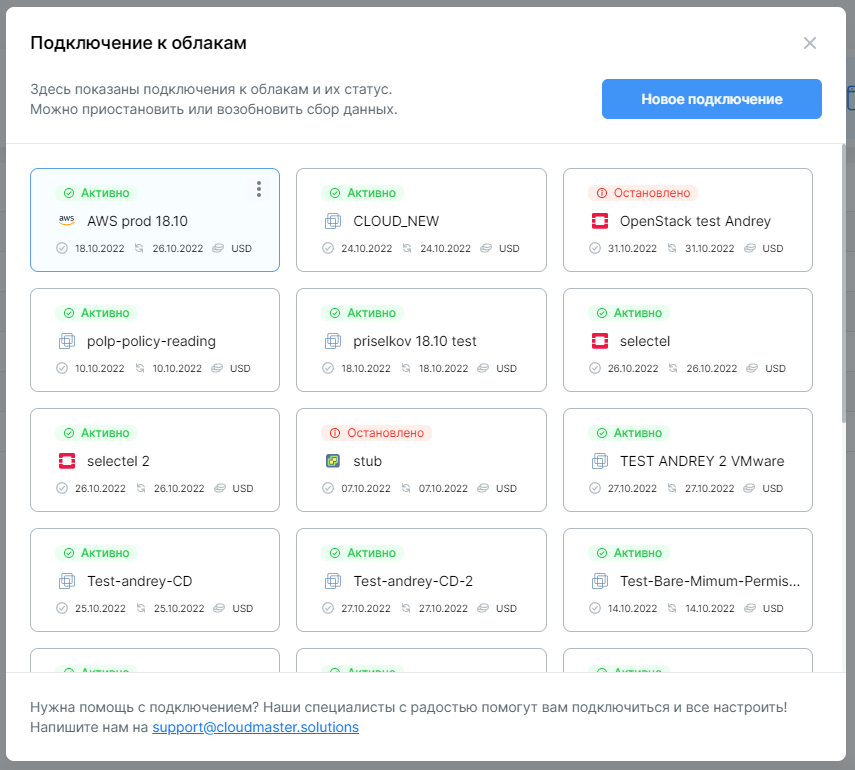
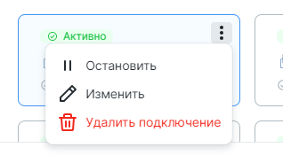
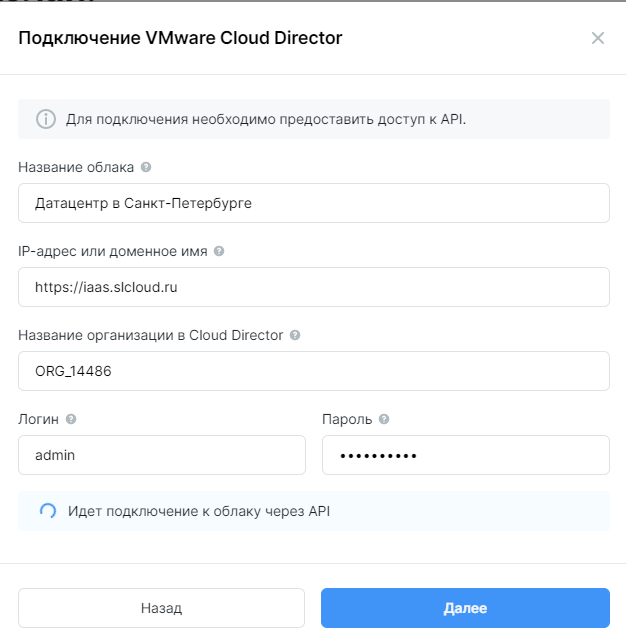

Управление подключениями облаков
Общий принцип подключения и управления
Все операции с подключением осуществляются в меню Подключение к облакам. В правом верхнем углу кликните на  , выберите пункт Подключение к облакам.
, выберите пункт Подключение к облакам.
В открывшемся окне отображается список существующих подключений. Указана информация о дате создания подключения (общая информация), дате обновления информации по потреблению и валюте расчетов (используется в модуле Coster).
Для создания подключения кликните Новое подключение.
Внимание
Подключение осуществляется обязательно для модуля Clouder и модуля Coster. Отсутствие данных для одного из модулей будет приводить к ошибкам.
В связи с этим в меню подключений облаков будет необходимо задать данные для расчетов по затратам или получению их из облака, хотя эти данные используются модулем Coster.

Действия с подключениями
Меню действий с подключением появляется при наведении курсора на карточку подключения — в виде иконки . Кликните, чтобы отобразать доступные опции:

- Остановить — прекращает доступ Clouder по предоставленным данным доступа к облаку.
- Изменить — позволяет отредактировать данные подключения.
- Удалить подключение — удаляет данные доступа к облаку, а также все данные, собранные за время подключения к облаку. Действие относится только к данным в Cloudmaster.
Подключение Clouder к облаку можно остановить.
Внимание
Остановка подключения Clouder НЕ ведет к изменениям в облаке. Все ресурсы продолжат работу в штатном режиме.
После остановки подключения Clouder перестанет собирать информацию об инфраструктуре. Пользователи Clouder потеряют возможность управлять виртуальными машинами через интерфейс Clouder.
Особенности подключения Яндекс Облака
Функциональность управления Яндекс Облаком имеет следующие неизменяемые параметры:
- управление машинами только в зоне доступности ru-central1-a,
- создание машин только с сетями из зоны доступности ru-central1-a,
- все машины создаются на платформе Intel Broadwell,
- при создании дополнительного диска применяется тип диска HDD,
- загрузочный диск можно удалить только вместе с машиной (отсоединить нельзя),
- нет функции создания контрольной точки для машины.
Для подключения Яндекс Облака требуются данные двух аккаунтов: пользователя Яндекс Облака для модуля Clouder и сервисного аккаунта для модуля Coster. В текущей реализации необходимы настройки и данные обоих аккаунтов.
Набор прав для Clouder
Пользователь, от лица которого будет осуществлять действия Clouder, должен обладать доступом к нужным облакам и каталогам (структурным единицам Яндекс Облака), а также иметь права, необходимые для выполнения действий с машинами и дисками.
Нужно выбрать или создать пользователя Яндекс Облака, от лица которого Clouder будет осуществлять действия с ВМ, и создать OAuth-токен. Для этого необходимо залогиниться в Яндекс Облако под выбранным пользователем и следовать инструкции в документации.
Набор прав для Coster
Требуется предоставить доступ к бакету и папке, куда сохраняются биллинговые записи. Доступ к учету биллинга настраивается при помощи сервисного аккаунта. Проверьте, что у вас есть одна из ролей: billing.accounts.owner, billing.accounts.admin, billing.accounts.editor.
- Создать бакет и папку, настроить сбор данных биллинга. Ссылка на документацию.
- Создать сервисный аккаунт, предоставить данные к папке с биллингом и создать статический ключ (требуется идентификатор и значение). Ссылка на документацию.
Все поля формы обязательны для заполнения.

Особенности подключения VMware Cloud Director
Поключение состоит из двух шагов: 1) подключение к API и 2) настройка параметров учета затрат. В текущей версии продукта необходимо заполнение информации на обоих шагах, даже если вы не планируете пользоваться модулем Coster.
Стандартная модель авторизации в Cloud Director предполагает адрес размещения, название организации в Cloud Director и данные аккаунта. Рассмотрим на примере:
https://iaas.slcloud.ru/tenant/ORG_14486/
В данной строке:
https://iaas.slcloud.ru — адрес API, а ORG_14486 — название организации в Cloud Director.

Если проверка подключения прошла успешно, откроется второй шаг. В открывшейся форме необходимо заполнить данные:
- цена за ядро CPU в рабочей машине за сутки,
- цена за Гб RAM в рабочей машине за сутки,
- цена за Гб хранилища, прикрепленного к рабочей машине в сутки.
Цены указываются в валюте тенанта. Валюта определяется на этапе создания тенанта сотрудником Cloudmaster.
Модули продукта могут различать типы дисков Cloud Director (storage policy). На втором шаге предлагается вариант добавить тип диска вручную — заполнить название, которое должно полностью соответствовать названию на стороне Cloud Director, или запросить данные у провайдера. При запросе данных у провайдера Cloudmaster автоматически подятнет типы дисков из Cloud Director.
Необходимо заполнить значения цены для каждого типа. Clouder позволяет установить максимальный размер хранилища каждого типа для подключения. В дальнейшем Clouder будет ориентироваться на указанный объем хранилища и не позволит администраторам создать подписки превышающие в сумме объем по каждому из типов дисков.
Консоль
Подключение к консолям машин потребует организации сетевой связности. Специалисты Cloudmaster готовы оказать поддержку для настройки подключения.